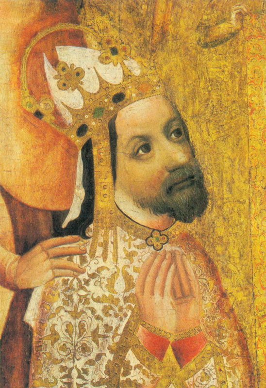

Slavná osobnost :
Karel IV.
| Portrét | Základní údaje | Význanmné činy | |
|---|---|---|---|
|  | Karel IV. |
Významné činy: Vydal Zlatou bulu, začal zakládat Nové Město pražské, založil Karlovu Univerzitu, založil hrad Karlštejn |
|
| 14. 15. 1316 | 29. 11. 1378 | ||
| jedenáctý český král vládnoucí jako Karel I. od srpna 1346 až do své smrti v listopadu 1378. Karel IV. byl římsko-německý král od července 1346 a od roku 1355 císař římský. Byl také italský (lombardský) král od roku 1355, burgundský (arelatský) král od roku 1365, moravský markrabě v letech 1333 až 1349 a lucemburský hrabě v období let 1346 až 1353. | |||
| Karel IV. | |||
| Odkaz na wikipedii | |||
Značky a atributy tabulky
- tr
- Vytvoření řady tabulky
- th
- Nadpis kategorie tabulky
- td
- Data jednotlivých buněk tabulky
- colspan
- Atribut zajišťující rozpětí přes několik sloupců.
- rowspan
- Atribut zajišťující rozpětí přes několik řádků.
- table
- Značka, která zajistí ohraničení celé tabulky
- thead
- Záhlaví tabulky
- tbody
- Tělo tabulky
- tfoot
- Pata (spodní část) tabulky